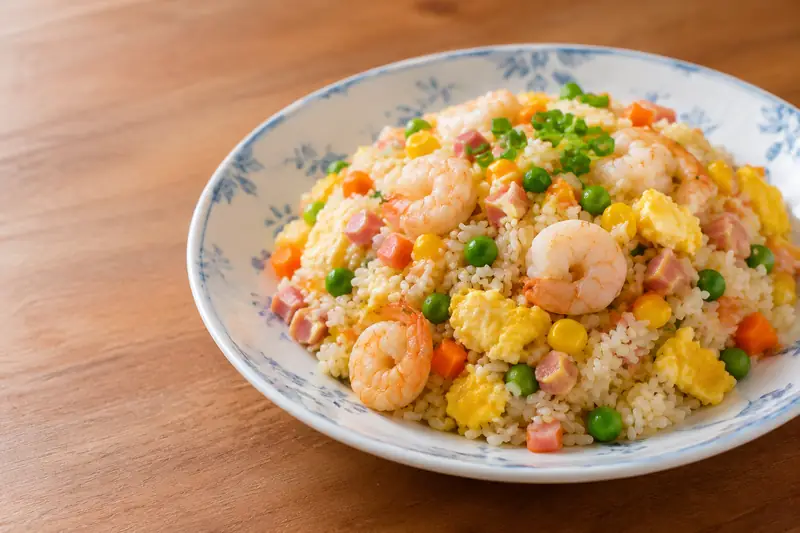

Staple主食 · Jiangnan江浙
Yangzhou Fried Rice扬州炒饭
The most refined fried rice: shrimp, egg, ham and peas, every grain separate and coated in egg. Diced ham is harder to find here, so bacon stands in with even more flavour. Day-old rice is best; freshly cooked rice is too wet and clumps.炒饭里最讲究的一种：虾仁、鸡蛋、火腿、青豆，粒粒分开、颗颗有蛋香。北美买火腿丁不方便，用培根代替，香味更足。前一天剩的米饭最好，新煮的饭水分大，一炒就黏。

Ingredients食材
- Jasmine rice茉莉香米 280 g · 1.5 cups jasmine rice (about 280 g raw), cooked the day before and chilled茉莉香米 1.5 杯（约 280 克生米），提前一天煮好冷藏
- Frozen raw shrimp冷冻生虾 150 g · 150 g peeled raw shrimp, cut to pea size生虾仁 150 克，切成豌豆大小
- Eggs鸡蛋 150 g · 3 large eggs3 个
- Bacon培根 60 g · 3 slices bacon, finely diced培根 3 片，切小丁 ham or char siu is more traditional有火腿或叉烧更传统
- Frozen mixed vegetables冷冻混合蔬菜 120 g · 1 cup frozen peas, corn and carrot冷冻青豆玉米胡萝卜丁 1 杯
- Green onions大葱/小葱 20 g · 3 stalks, sliced3 根，切葱花
- Canola oil菜籽油 35 g · 2.5 tbsp2.5 汤匙
- Salt盐 4 g · about 2/3 tsp约 2/3 茶匙
- Black pepper黑胡椒 1 g · a pinch (white pepper is traditional)少许（传统用白胡椒）
Weights are as bought, before trimming or peeling. Costco pack sizes and availability vary; see each ingredient page.重量为买回来的原重（去皮去骨之前）。Costco 规格与有无随时变化，点食材名看详情。
Method做法
- Break up the cold rice with your hands, crumbling any clumps.冷饭用手抓散，结块的捏开。
- Beat the eggs with a pinch of salt.鸡蛋打散，加一小撮盐。
- Fry the bacon in 1 tsp oil until the fat runs and it crisps, then lift it out.锅里放 1 茶匙油，煸培根丁到出油微脆，盛出。
- Stir-fry the shrimp in the same pan until pink, then lift them out.原锅下虾仁炒到变色，盛出。
- Add the rest of the oil, pour in the egg and immediately add the rice.加剩下的油烧热，倒入蛋液，马上倒入米饭。
- Toss hard over high heat for 2-3 minutes until the egg coats the grains and they separate.大火快速翻炒 2–3 分钟，让蛋液包住米粒、粒粒分开。
- Add the frozen vegetables for a minute, then return the bacon and shrimp.加冷冻蔬菜炒 1 分钟，再放回培根和虾仁。
- Season with salt and pepper, add the green onion, toss 10 seconds and serve.撒盐和胡椒翻匀，最后加葱花炒 10 秒出锅。
Keys to success成功要点
- Chilled day-old rice has a dry surface that fries loose; in a hurry, spread fresh rice on a tray and chill it 30 minutes.隔夜冷饭表面干，才炒得松散；急用时新饭摊开放冰箱晾 30 分钟。
- Adding the rice while the egg is still liquid lets it coat each grain, the classic gold-wrapped-silver method.蛋液下锅还没凝固就倒饭，蛋才会裹在米粒上，这是「金包银」的做法。
- Cook the add-ins first and return them at the end so none of them overcooks.配料先炒好盛出，最后回锅，各自的口感才不会被炒老。
Common problems常见失败与补救
- The rice is clumpy and sticky米饭黏成一团
Fresh rice or a pan that was not hot enough. Fry in two batches with the pan smoking each time.用了新煮的饭或锅不够热。分两次炒，每次锅都要烧到冒烟。 - It sticks to the pan粘锅
Heat the pan before the oil and the oil before the food; a non-stick pan makes it easy.先把锅烧热再放油，油热后再下料；不粘锅更省事。
Watch it done视频参考
Chef Wang Gang's Yangzhou fried rice; five and a half minutes, nearly three million views, with an English title.王刚的扬州炒饭，5 分半钟，播放近三百万，有英文标题。
Lao Fan Gu's state-banquet version; eight minutes, over 340,000 views.老饭骨国宴大师版扬州炒饭，8 分钟，播放三十多万。
Videos load only when you tap them (youtube-nocookie). Creators are credited; we do not host their videos.点了才加载视频（youtube-nocookie）。署名原作者，本站不托管视频。
Nutrition营养
| Energy热量 | 657 kcal |
| Protein蛋白质 | 22.4 g |
| Fat脂肪 | 25.3 g |
| of which saturated其中饱和脂肪 | 5.2 g |
| Carbohydrate碳水化合物 | 81.8 g |
| Fibre膳食纤维 | 2.8 g |
| Sodium钠 | 1000 mg |
High sodium钠偏高 Sodium tiers: under 345 mg lower, 345-689 mg moderate, 690 mg and above high (this site's tiers; 15% of the 2,300 mg daily reference = 345 mg).钠分档：低于 345 mg 较低，345–689 mg 中等，690 mg 及以上偏高（本站分档；345 mg ＝ 每日参考 2300 mg 的 15%）。
Computed from the Canadian Nutrient File (Health Canada) with the weights above; oil and sauces are counted in full. Real dishes differ.按加拿大营养素数据库和上面的重量计算；油和酱汁按全量计入，实际会略低。
Good to know适合 / 需注意
- About 1000 mg sodium per serving (about 43% of the 2,300 mg daily reference), on the high side; use less soy sauce or salt, and pair with unsalted sides.每份钠约 1000 mg（约占每日参考 2300 mg 的 43%），偏高；少放酱油或盐，或搭配无盐主食与蔬菜。
- About 81.8 g carbohydrate per serving, plenty; adjust the staple portion to your activity.每份碳水化合物约 81.8 g，较多；按活动量调整主食份量。
- Contains allergens: Crustaceans, Egg.含过敏原：甲壳类、鸡蛋。
Grain, protein and vegetables in one plate and good for packed lunches; bacon is salty, so go easy on the salt.一盘有主食、蛋白质和蔬菜，适合带饭；培根偏咸，盐可少放一点。